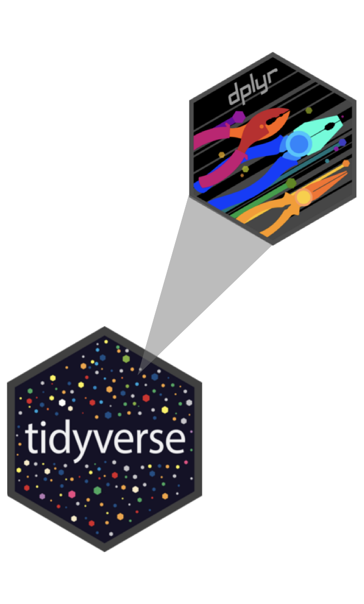

library(tidyverse)
library(nycflights13)Grammar of data transformation
Data visualization and transformation
Data frames and tibbles
NYC Flights
To demonstrate data wrangling we will use
flights, a tibble in the nycflights13 R package.The data set includes characteristics of all flights departing from New York City (JFK, LGA, EWR) in 2013.
flights – dimensions
- Number of rows:
nrow(flights)[1] 336776. . .
- Number of columns:
ncol(flights)[1] 19flights – first look with glimpse()
glimpse(flights)Rows: 336,776
Columns: 19
$ year <int> 2013, 2013, 2013, 2013, 2013, 2013,…
$ month <int> 1, 1, 1, 1, 1, 1, 1, 1, 1, 1, 1, 1,…
$ day <int> 1, 1, 1, 1, 1, 1, 1, 1, 1, 1, 1, 1,…
$ dep_time <int> 517, 533, 542, 544, 554, 554, 555, …
$ sched_dep_time <int> 515, 529, 540, 545, 600, 558, 600, …
$ dep_delay <dbl> 2, 4, 2, -1, -6, -4, -5, -3, -3, -2…
$ arr_time <int> 830, 850, 923, 1004, 812, 740, 913,…
$ sched_arr_time <int> 819, 830, 850, 1022, 837, 728, 854,…
$ arr_delay <dbl> 11, 20, 33, -18, -25, 12, 19, -14, …
$ carrier <chr> "UA", "UA", "AA", "B6", "DL", "UA",…
$ flight <int> 1545, 1714, 1141, 725, 461, 1696, 5…
$ tailnum <chr> "N14228", "N24211", "N619AA", "N804…
$ origin <chr> "EWR", "LGA", "JFK", "JFK", "LGA", …
$ dest <chr> "IAH", "IAH", "MIA", "BQN", "ATL", …
$ air_time <dbl> 227, 227, 160, 183, 116, 150, 158, …
$ distance <dbl> 1400, 1416, 1089, 1576, 762, 719, 1…
$ hour <dbl> 5, 5, 5, 5, 6, 5, 6, 6, 6, 6, 6, 6,…
$ minute <dbl> 15, 29, 40, 45, 0, 58, 0, 0, 0, 0, …
$ time_hour <dttm> 2013-01-01 05:00:00, 2013-01-01 05…flights – first look with names()
names(flights) [1] "year" "month" "day"
[4] "dep_time" "sched_dep_time" "dep_delay"
[7] "arr_time" "sched_arr_time" "arr_delay"
[10] "carrier" "flight" "tailnum"
[13] "origin" "dest" "air_time"
[16] "distance" "hour" "minute"
[19] "time_hour" flights – first look with head()
head(flights)# A tibble: 6 × 19
year month day dep_time sched_dep_time dep_delay
<int> <int> <int> <int> <int> <dbl>
1 2013 1 1 517 515 2
2 2013 1 1 533 529 4
3 2013 1 1 542 540 2
4 2013 1 1 544 545 -1
5 2013 1 1 554 600 -6
6 2013 1 1 554 558 -4
# ℹ 13 more variables: arr_time <int>,
# sched_arr_time <int>, arr_delay <dbl>, carrier <chr>,
# flight <int>, tailnum <chr>, origin <chr>, dest <chr>,
# air_time <dbl>, distance <dbl>, hour <dbl>,
# minute <dbl>, time_hour <dttm>tibble vs. data frame
- tibble: an opinionated version of the
Rdata frame - All tibbles are data frames, but not all data frames are tibbles!
- Two main differences between a tibble and a data frame:
- Printing
- Stricter subsetting
Printing - tibbles
Display first 10 rows and all of the columns that fit on the screen will display, along with the type of each column.
flights# A tibble: 336,776 × 19
year month day dep_time sched_dep_time dep_delay
<int> <int> <int> <int> <int> <dbl>
1 2013 1 1 517 515 2
2 2013 1 1 533 529 4
3 2013 1 1 542 540 2
4 2013 1 1 544 545 -1
5 2013 1 1 554 600 -6
6 2013 1 1 554 558 -4
7 2013 1 1 555 600 -5
8 2013 1 1 557 600 -3
9 2013 1 1 557 600 -3
10 2013 1 1 558 600 -2
# ℹ 336,766 more rows
# ℹ 13 more variables: arr_time <int>,
# sched_arr_time <int>, arr_delay <dbl>, carrier <chr>,
# flight <int>, tailnum <chr>, origin <chr>, dest <chr>,
# air_time <dbl>, distance <dbl>, hour <dbl>,
# minute <dbl>, time_hour <dttm>Printing - data.frames
(Attempt to) display all of the data, or die (crash) tryin (if the dataset is too large)!
cars speed dist
1 4 2
2 4 10
3 7 4
4 7 22
5 8 16
6 9 10
7 10 18
8 10 26
9 10 34
10 11 17
11 11 28
12 12 14
13 12 20
14 12 24
15 12 28
16 13 26
17 13 34
18 13 34
19 13 46
20 14 26
21 14 36
22 14 60
23 14 80
24 15 20
25 15 26
26 15 54
27 16 32
28 16 40
29 17 32
30 17 40
31 17 50
32 18 42
33 18 56
34 18 76
35 18 84
36 19 36
37 19 46
38 19 68
39 20 32
40 20 48
41 20 52
42 20 56
43 20 64
44 22 66
45 23 54
46 24 70
47 24 92
48 24 93
49 24 120
50 25 85Stricter subsetting – tibbles
Warning + NULL if variable not found.
flights$appleWarning: Unknown or uninitialised column: `apple`.NULLStricter subsetting – data.frames
Only NULL if variable not found.
cars$appleNULLData wrangling with dplyr
dplyr
dplyr \(\in\) tidyverse
- dplyr is tidyverse’s primary package for data wrangling
- Package website: dplyr.tidyverse.org

Row operations
slice(): chooses rows based on locationfilter():chooses rows based on column valuesarrange(): changes the order of the rowssample_n(): take a random subset of the rows
slice()
Display the first five rows of flights:
- 1
-
Take the
flightsdata frame, and then, - 2
- Slice its first five rows
# A tibble: 5 × 19
year month day dep_time sched_dep_time dep_delay
<int> <int> <int> <int> <int> <dbl>
1 2013 1 1 517 515 2
2 2013 1 1 533 529 4
3 2013 1 1 542 540 2
4 2013 1 1 544 545 -1
5 2013 1 1 554 600 -6
# ℹ 13 more variables: arr_time <int>,
# sched_arr_time <int>, arr_delay <dbl>, carrier <chr>,
# flight <int>, tailnum <chr>, origin <chr>, dest <chr>,
# air_time <dbl>, distance <dbl>, hour <dbl>,
# minute <dbl>, time_hour <dttm>filter()
Filter for flights to RDU in flights:
- 1
-
Take the
flightsdata frame, and then, - 2
-
Filter for rows where
destis equal toRDU
# A tibble: 8,163 × 19
year month day dep_time sched_dep_time dep_delay
<int> <int> <int> <int> <int> <dbl>
1 2013 1 1 800 810 -10
2 2013 1 1 832 840 -8
3 2013 1 1 851 851 0
4 2013 1 1 917 920 -3
5 2013 1 1 1024 1030 -6
6 2013 1 1 1127 1129 -2
7 2013 1 1 1157 1205 -8
8 2013 1 1 1240 1235 5
9 2013 1 1 1317 1325 -8
10 2013 1 1 1449 1450 -1
# ℹ 8,153 more rows
# ℹ 13 more variables: arr_time <int>,
# sched_arr_time <int>, arr_delay <dbl>, carrier <chr>,
# flight <int>, tailnum <chr>, origin <chr>, dest <chr>,
# air_time <dbl>, distance <dbl>, hour <dbl>,
# minute <dbl>, time_hour <dttm>The pipe
The pipe,
|>, is an operator (a tool) for passing information from one process to another.Use
|>mainly in data pipelines to pass the output of the previous line of code as the first input of the next line of code.When reading code “in English”, say “and then” whenever you see a pipe.
Delayed flights to RDU
Which airline is the most delayed, on average, arriving in RDU from a New York City airport?
. . .
Goal:
# A tibble: 5 × 2
carrier mean_arr_delay
<chr> <dbl>
1 UA 56
2 B6 13.3
3 EV 12.2
4 9E 9.67
5 MQ 8.82The pipe, in action
1flights- 1
- Take the flights data frame
# A tibble: 336,776 × 19
year month day dep_time sched_dep_time dep_delay
<int> <int> <int> <int> <int> <dbl>
1 2013 1 1 517 515 2
2 2013 1 1 533 529 4
3 2013 1 1 542 540 2
4 2013 1 1 544 545 -1
5 2013 1 1 554 600 -6
6 2013 1 1 554 558 -4
7 2013 1 1 555 600 -5
8 2013 1 1 557 600 -3
9 2013 1 1 557 600 -3
10 2013 1 1 558 600 -2
# ℹ 336,766 more rows
# ℹ 13 more variables: arr_time <int>,
# sched_arr_time <int>, arr_delay <dbl>, carrier <chr>,
# flight <int>, tailnum <chr>, origin <chr>, dest <chr>,
# air_time <dbl>, distance <dbl>, hour <dbl>,
# minute <dbl>, time_hour <dttm>The pipe, in action
- 1
- Take the flights data frame,
- 2
- and then filter for flights going to RDU
# A tibble: 8,163 × 19
year month day dep_time sched_dep_time dep_delay
<int> <int> <int> <int> <int> <dbl>
1 2013 1 1 800 810 -10
2 2013 1 1 832 840 -8
3 2013 1 1 851 851 0
4 2013 1 1 917 920 -3
5 2013 1 1 1024 1030 -6
6 2013 1 1 1127 1129 -2
7 2013 1 1 1157 1205 -8
8 2013 1 1 1240 1235 5
9 2013 1 1 1317 1325 -8
10 2013 1 1 1449 1450 -1
# ℹ 8,153 more rows
# ℹ 13 more variables: arr_time <int>,
# sched_arr_time <int>, arr_delay <dbl>, carrier <chr>,
# flight <int>, tailnum <chr>, origin <chr>, dest <chr>,
# air_time <dbl>, distance <dbl>, hour <dbl>,
# minute <dbl>, time_hour <dttm>The pipe, in action
- 1
- Take the flights data frame,
- 2
- and then filter for flights going to RDU,
- 3
- and then group by carrier
# A tibble: 8,163 × 19
# Groups: carrier [5]
year month day dep_time sched_dep_time dep_delay
<int> <int> <int> <int> <int> <dbl>
1 2013 1 1 800 810 -10
2 2013 1 1 832 840 -8
3 2013 1 1 851 851 0
4 2013 1 1 917 920 -3
5 2013 1 1 1024 1030 -6
6 2013 1 1 1127 1129 -2
7 2013 1 1 1157 1205 -8
8 2013 1 1 1240 1235 5
9 2013 1 1 1317 1325 -8
10 2013 1 1 1449 1450 -1
# ℹ 8,153 more rows
# ℹ 13 more variables: arr_time <int>,
# sched_arr_time <int>, arr_delay <dbl>, carrier <chr>,
# flight <int>, tailnum <chr>, origin <chr>, dest <chr>,
# air_time <dbl>, distance <dbl>, hour <dbl>,
# minute <dbl>, time_hour <dttm>The pipe, in action
1flights |>
2 filter(dest == "RDU") |>
3 group_by(carrier) |>
4 summarize(mean_arr_delay = mean(arr_delay, na.rm = TRUE))- 1
- Take the flights data frame,
- 2
- and then filter for flights going to RDU,
- 3
- and then group by carrier,
- 4
- and then calculate the mean arrival delay for each carrier
# A tibble: 5 × 2
carrier mean_arr_delay
<chr> <dbl>
1 9E 9.67
2 B6 13.3
3 EV 12.2
4 MQ 8.82
5 UA 56 The pipe, in action
1flights |>
2 filter(dest == "RDU") |>
3 group_by(carrier) |>
4 summarize(mean_arr_delay = mean(arr_delay, na.rm = TRUE)) |>
5 arrange(desc(mean_arr_delay))- 1
- Take the flights data frame,
- 2
- and then filter for flights going to RDU,
- 3
- and then group by carrier,
- 4
- and then calculate the mean arrival delay for each carrier,
- 5
- and then arrange in descending order of mean arrival delay.
# A tibble: 5 × 2
carrier mean_arr_delay
<chr> <dbl>
1 UA 56
2 B6 13.3
3 EV 12.2
4 9E 9.67
5 MQ 8.82Column operations
select(): changes whether or not a column is included.rename(): changes the name of columns.mutate(): changes the values of columns and creates new columns.
Groups of rows
summarize(): collapses a group into a single row.count(): count unique values of one or more variables.group_by(): perform calculations separately for each value of a variable